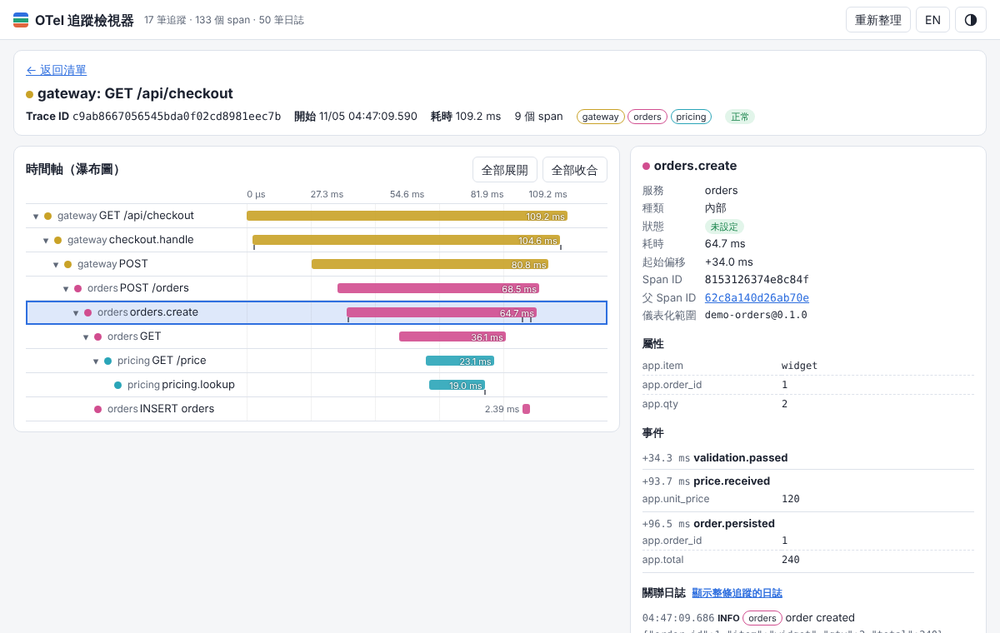
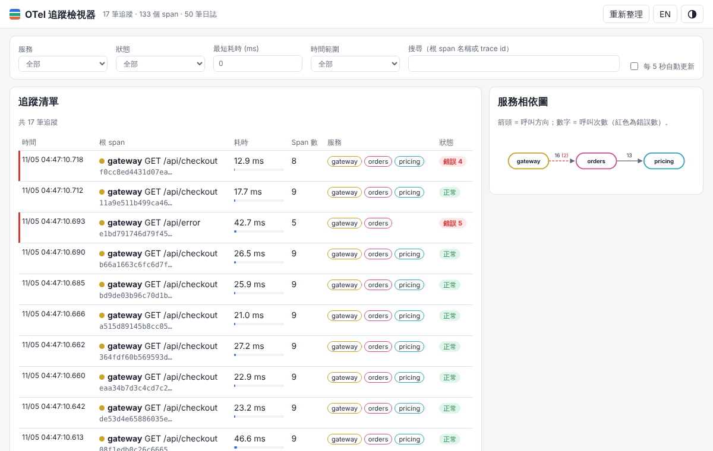
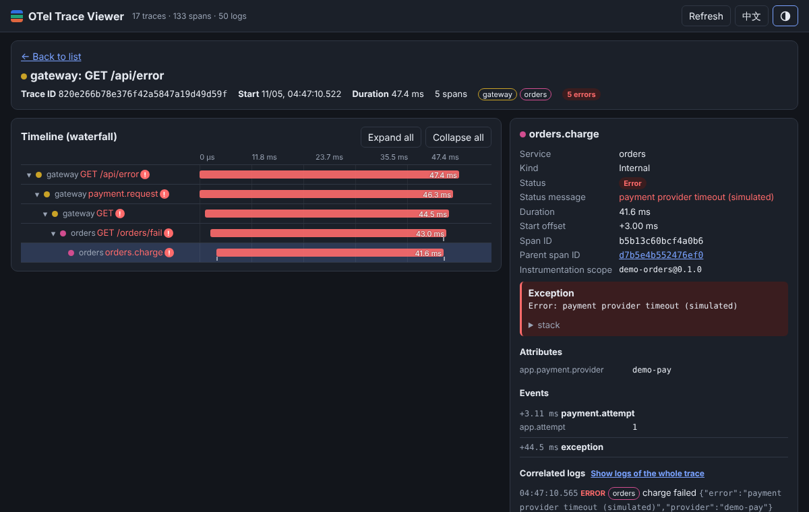

概覽
本專案示範「分散式追蹤」從產生、傳送、儲存到檢視的完整流程，不需要 Docker、Jaeger 或任何雲端服務，只需 Node.js 22.13 以上版本。
- 三個示範服務：
gateway（對外入口）→orders（SQLite 寫入、讀取）→pricing（價格查詢）。服務之間以fetch()呼叫，W3Ctraceparent標頭由 OpenTelemetry 自動注入與解析，因此同一個請求跨三個行程仍屬於同一條 trace。 - 官方 OpenTelemetry JS SDK：
@opentelemetry/sdk-node+ http / undici 自動儀表化，加上手動 span、span 事件（event）、屬性（attribute）、例外紀錄與錯誤狀態。 - 刻意設計的慢路徑與錯誤路徑：
/api/slow（可調整延遲）與/api/error（模擬金流逾時，回傳 502），另有「未知商品」造成的 4xx 路徑。 - 自製收集器：Node http 伺服器實作
POST /v1/traces與POST /v1/logs（OTLP/HTTP，JSON 編碼，支援 gzip），存入 SQLite（Node 內建node:sqlite，不需編譯原生模組）。 - 檢視器網頁：由收集器直接提供。追蹤清單（依服務、狀態、最短耗時、時間範圍、關鍵字篩選）、瀑布圖（巢狀 span、可收合）、span 詳細面板（屬性、事件、狀態、例外、資源屬性）、關聯日誌、服務相依圖。預設繁體中文，可切換英文；淺色 / 深色主題。
- 日誌關聯：每個服務寫 JSONL 結構化日誌，並自動帶上目前 span 的
trace_id/span_id；同時以 OTLP JSON 送到收集器，檢視器可顯示「此 span 的日誌」或「整條 trace 的日誌」。 - 負載產生器：
src/loadgen.mjs依比例產生結帳、查詢、慢請求、錯誤請求。

資料夾結構
04-otel-trace-viewer/
src/common/config.cjs 設定：資料夾（Windows 為 %ProgramData%）、參數解析
src/common/logger.cjs JSONL 日誌（等級、trace 關聯、OTLP 送出）
src/services/tracing.cjs OpenTelemetry SDK 初始化（必須在 node:http 之前載入）
src/services/base.cjs 服務共用骨架：tracing → logger → 路由 → HTTP 伺服器
src/services/gateway.cjs gateway 服務
src/services/orders.cjs orders 服務（node:sqlite）
src/services/pricing.cjs pricing 服務
src/collector/server.mjs 收集器 + 查詢 API + 靜態檢視器
src/collector/otlp.mjs OTLP JSON 解碼
src/collector/store.mjs SQLite 儲存與查詢
src/start-all.mjs 一次啟動所有行程
src/loadgen.mjs 負載產生器
public/ 檢視器前端（index.html、app.js、app.css、i18n.js）
test/e2e.test.mjs 端對端測試（含 Playwright）
examples/ 測試產生的截圖
start.bat / loadgen.bat / run-tests.bat / setup.bat → otv.ps1 → node快速開始
需求：Node.js 22.13 以上（需要內建 node:sqlite）。開發時使用 Node 22.23.4。
Windows
- 雙擊
setup.bat：執行npm ci並下載 Playwright 用的 Chromium（只有執行測試時需要）。 - 雙擊
start.bat：啟動收集器與三個服務。視窗會印出網址，預設為http://127.0.0.1:4318/。 - 另開一個視窗，雙擊
loadgen.bat產生 50 筆示範流量（也可以用start.bat --load 30在啟動後自動產生）。 - 以瀏覽器開啟
http://127.0.0.1:4318/，點選任一筆追蹤。 - 要結束時在
start.bat視窗按Ctrl+C（先停服務，最後停收集器，最後一批 span 不會遺失）。
每個 .bat 都是純 ASCII + CRLF，會先切換到自己的資料夾（pushd "%~dp0"）、印出目前路徑，呼叫 otv.ps1（UTF-8 BOM），最後印出結束代碼並 pause。額外參數會原樣傳給 node，例如 start.bat --debug --load 30。
Windows 預設資料夾：%ProgramData%\NewMiscCode\04-otel-trace-viewer（traces.db、orders-demo.db、logs\*.jsonl）。
Linux / macOS
cd 04-otel-trace-viewer
npm ci
npm start # 或：npm start -- --load 30 --debug
# 另一個終端機
npm run loadgen -- --count 50
# 瀏覽器開啟 http://127.0.0.1:4318/
npx playwright install chromium # 只有 npm test 需要（若尚未安裝）
npm testLinux 預設資料夾為專案內的 ./data（已列入 .gitignore）。
預設連接埠
| 行程 | 連接埠 | 變更參數 |
|---|---|---|
| 收集器 + 檢視器（OTLP/HTTP 標準埠） | 4318 | --collector-port |
| gateway | 3401 | --gateway-port |
| orders | 3402 | --orders-port |
| pricing | 3403 | --pricing-port |
若本機已經有其他 OpenTelemetry Collector 佔用 4318，請改用例如 npm start -- --collector-port 14318。
使用說明
示範服務端點（gateway）
| 端點 | 行為 | 追蹤中可看到 |
|---|---|---|
GET /api/checkout?item=widget&qty=2 | 建立訂單：gateway → orders（驗證、呼叫 pricing、SQLite INSERT） | 9 個 span、3 個服務；事件 validation.passed、price.received、order.persisted |
GET /api/checkout?item=unobtainium | pricing 回 404，orders 回 422 | pricing.lookup 為錯誤、事件 catalog.miss |
GET /api/orders/1 | 以 SQLite SELECT 查詢訂單 | SELECT orders span（含 db.query.text） |
GET /api/slow?ms=1200 | 慢路徑：report.aggregate 刻意延遲 | 長條明顯較長、事件 report.slow、WARN 日誌 |
GET /api/error | 錯誤路徑：orders.charge 拋出例外，gateway 回 502 | 5 個 span 全標為錯誤、exception 事件與堆疊、ERROR 日誌 |
每個回應都帶 x-trace-id 標頭，可直接開啟 http://127.0.0.1:4318/#/trace/<trace id>。
檢視器操作
- 追蹤清單：每列為一條 trace（根 span、耗時與比例條、span 數、經過的服務、錯誤數）。左側紅線代表含錯誤。
- 篩選：服務、狀態（正常 / 錯誤）、最短耗時（毫秒）、時間範圍、搜尋（根 span 名稱或 trace id 開頭）。勾選「每 5 秒自動更新」可持續觀察。
- 服務相依圖：以 parent/child span 的服務不同來推導呼叫邊；數字為呼叫次數，紅色括號為錯誤數，虛線紅邊代表有錯誤。
- 瀑布圖：依父子關係縮排；長條位置 = 相對開始時間，寬度 = 耗時；長條下方小刻度為 span 事件。▾ / ▸ 可收合子 span；「全部展開 / 全部收合」。鍵盤可用 ↑ ↓ 切換、Enter 選取。
- Span 詳細面板：服務、種類（伺服器 / 用戶端 / 內部）、狀態與訊息、耗時、起始偏移、Span ID、父 Span ID（可點擊跳轉）、儀表化範圍、例外（含堆疊）、屬性、事件（含事件屬性）、資源屬性。
- 關聯日誌：預設顯示
span_id相同的日誌；點「顯示整條追蹤的日誌」改為 trace 範圍。 - 語言 / 主題：右上角
EN/中文切換語言，◐ 切換深淺色；選擇會記在瀏覽器 localStorage。 - 網址可分享：
#/trace/<traceId>?span=<spanId>。
命令列參數
| 指令 | 參數 |
|---|---|
node src/start-all.mjs（npm start、start.bat） | --data-dir DIR --log-dir DIR --debug --load N（啟動後送 N 個請求） --inspect gateway|orders|pricing|collector（該行程開 9229 除錯埠） --collector-port --gateway-port --orders-port --pricing-port |
node src/collector/server.mjs（npm run collector） | --port 4318 --host 127.0.0.1 --data-dir --log-dir --jsonl（另外把 span 附加到 spans.jsonl） --debug |
node src/loadgen.mjs（npm run loadgen、loadgen.bat） | --gateway URL --count 50 --concurrency 4 --slow-ms 1200 --verbose |
個別服務 node src/services/gateway.cjs | --port --collector URL --orders URL（orders 用 --pricing URL） --data-dir --debug |
環境變數：OTV_DATA_DIR、OTV_LOG_DIR、OTV_DEBUG=1、OTV_COLLECTOR_URL、OTV_ORDERS_URL、OTV_PRICING_URL。參數優先於環境變數。
讓其他程式送資料進來
任何支援 OTLP/HTTP JSON 的 SDK 都可以送到 http://127.0.0.1:4318/v1/traces，例如 Node 使用 @opentelemetry/exporter-trace-otlp-http；Python 需改用 JSON 編碼的匯出器（官方 Python HTTP 匯出器預設 protobuf，見「限制」）。
逐步驗證指南
以下步驟讓同事在自己的電腦上重現並確認每個功能。指令以 Linux 為例；Windows 請使用對應的 .bat 或在 PowerShell 執行相同的 npm 指令。
- 安裝：
npm ci。
預期：結尾出現found 0 vulnerabilities，產生node_modules。 - 自動測試：
npm test（Windows：run-tests.bat）。
預期：約 5 秒內完成，輸出
測試使用隨機連接埠與暫存資料夾，不會影響正在執行的ok 1 - W3C trace context propagates gateway -> orders -> pricing with correct parent/child links ok 2 - error path: exception recorded and ERROR status on failing spans up to the root ok 3 - slow path: span durations reflect the deliberate delay; list filters work ok 4 - logs are correlated with trace_id/span_id (collector + JSONL files) ok 5 - dependencies, stats and OTLP edge cases ok 6 - viewer UI (Playwright): list, waterfall, span detail, logs, language toggle, 390px layout ok 7 - README.html renders without console errors and without horizontal scroll at 390px # pass 7 # fail 0npm start；並重新產生examples/內的三張截圖。 - 手動啟動：
npm start -- --load 30。
預期：依序看到collector + viewer listening、pricing listening、orders listening、gateway listening，再出現框線內的網址表與[loadgen] {"total":30,...,"failed":0}。 - 開啟檢視器
http://127.0.0.1:4318/。
預期：標題「OTel 追蹤檢視器」，清單約 30 筆，右側服務相依圖顯示 gateway → orders → pricing。
圖 1：追蹤清單、篩選列與服務相依圖。 - 產生一筆結帳：
curl -i "http://127.0.0.1:3401/api/checkout?item=widget&qty=2"。
預期：HTTP 201，JSON 含"total":240，回應標頭有x-trace-id。按「重新整理」，清單最上方是gateway GET /api/checkout、9 個 span、狀態「正常」。 - 檢查跨服務傳遞：點該列。
預期：瀑布圖 9 列，縮排順序為GET /api/checkout→checkout.handle→POST（gateway 的 fetch 用戶端 span）→POST /orders（orders 伺服器 span）→orders.create→GET→GET /price（pricing）→pricing.lookup，以及INSERT orders。三個服務的 span 共用同一個 Trace ID。 - 檢查 span 詳細與日誌：點
orders.create。
預期：右側屬性有app.item = widget、app.qty = 2、app.order_id；事件依序validation.passed、price.received、order.persisted；關聯日誌有INFO orders order created。網址變成#/trace/…?span=…。（見概覽的截圖） - 錯誤路徑：
curl -i http://127.0.0.1:3401/api/error，回清單把「狀態」設為「錯誤」。
預期：HTTP 502；清單只剩含錯誤的 trace；開啟後 5 個 span 皆紅色並有「!」標記；點orders.charge看到狀態「錯誤」、訊息payment provider timeout (simulated)、例外區塊與堆疊、ERROR 日誌charge failed。
圖 2：錯誤追蹤，已切換為英文介面與深色主題。 - 慢路徑：
curl "http://127.0.0.1:3401/api/slow?ms=1500"，最短耗時填1000。
預期：清單只剩耗時 1 秒以上的 trace（這筆約 1.5 秒；loadgen 產生的慢請求約 1.2 秒也會出現）；瀑布圖中report.aggregate長條佔大部分寬度，orders.report有report.slow事件。 - 語言與主題：按右上
EN。
預期：所有標籤變英文（例如「← Back to list」），按鈕變成「中文」；重新整理後仍為英文。按 ◐ 切換深色。 - JSONL 日誌：查看
data/logs/orders.jsonl（Windows：%ProgramData%\NewMiscCode\04-otel-trace-viewer\logs\orders.jsonl）。
預期：每行一個 JSON，例如{"ts":"…","level":"info","service":"orders","msg":"order created","trace_id":"…","span_id":"…","order_id":1,…}。 - 收集器 API：
curl http://127.0.0.1:4318/api/stats。
預期：{"spans":…,"traces":…,"logs":…,"received":{…},"dbFile":"…traces.db"}。 - 文字編碼稽核：
npm run audit-text（呼叫 repo 根目錄的tools/audit-text.mjs）。
預期：[audit] root=. files=… problems=0。
開發者指南
架構與資料流
browser / curl / loadgen
│ HTTP
▼
┌──────────┐ fetch + traceparent ┌──────────┐ fetch + traceparent ┌──────────┐
│ gateway │ ──────────────────▶ │ orders │ ──────────────────▶ │ pricing │
└────┬─────┘ └──┬───┬───┘ └────┬─────┘
│ │ └─ node:sqlite (orders-demo.db) │
│ BatchSpanProcessor → OTLPTraceExporter (JSON) / logger → /v1/logs
└──────────────────────────────┼──────────────────────────────────┘
▼
┌───────────────────────────────────┐
│ collector (src/collector/server) │
│ POST /v1/traces POST /v1/logs │
│ otlp.mjs decode -> store.mjs │
│ GET /api/* + public/ viewer │
└───────────────────────────────────┘- 請求進入 gateway；http 自動儀表化建立 SERVER span，路由器把名稱改成
GET /api/checkout並設定http.route。 - 手動 span
checkout.handle內呼叫fetch()；undici 儀表化建立 CLIENT span 並注入traceparent: 00-<traceId>-<spanId>-01。 - orders 的 http 儀表化讀取
traceparent，SERVER span 的父 span 就是 gateway 的 CLIENT span。pricing 同理。 - 各服務以 BatchSpanProcessor（300 ms）批次送 OTLP JSON 到收集器；日誌每 500 ms 批次送
/v1/logs（送出時suppressTracing，避免產生自身追蹤）。 - 收集器將 ID 正規化為小寫 hex、時間轉為微秒，寫入 SQLite
spans/logs資料表；檢視器透過/api/*查詢。
模組職責
| 檔案 | 職責 |
|---|---|
src/services/tracing.cjs | 建立 NodeSDK：resource（service.name）、OTLP JSON 匯出器、BatchSpanProcessor、Http / Undici 儀表化；關閉 metrics / logs 匯出。 |
src/services/base.cjs | 先啟動 tracing 再 require('node:http')；簡易路由（:param）、JSON 回應、例外 → SERVER span 標錯誤 + 500、x-trace-id 標頭、就緒行 OTV_READY {...}、優雅關閉（SIGTERM / IPC shutdown）。 |
src/services/spans.cjs | withSpan()：建立 active span、紀錄例外、設 ERROR、必定 end()。 |
src/common/logger.cjs | JSONL 日誌、等級 debug/info/warn/error、自動附加 trace_id/span_id、OTLP 日誌送出。 |
src/collector/otlp.mjs | OTLP JSON → 資料列（AnyValue、hex/base64 ID、奈秒 → 微秒）。 |
src/collector/store.mjs | SQLite schema、批次寫入（交易）、清單篩選、相依邊、統計。 |
src/collector/server.mjs | HTTP 路由、gzip/deflate 解壓、protobuf 回 415、靜態檔案（防目錄穿越）。 |
src/start-all.mjs | 以子行程啟動四個行程、等待就緒、轉印輸出、依序關閉（服務先、收集器最後）。測試也重用 startStack()。 |
public/app.js | Hash 路由、清單、相依圖（SVG）、瀑布圖、詳細面板、i18n、主題。 |
收集器查詢 API
| 端點 | 說明 |
|---|---|
GET /api/traces?service=&status=ok|error&minDurationMs=&sinceMinutes=&q=&limit= | trace 摘要清單（新到舊） |
GET /api/traces/<traceId> | { trace_id, spans[], logs[] } |
GET /api/logs?traceId=&spanId= | 關聯日誌 |
GET /api/services、GET /api/dependencies、GET /api/stats | 服務、相依邊、統計 |
POST /api/clear | 清空所有 span 與日誌 |
如何擴充
- 新增服務：複製
src/services/pricing.cjs，改runService('名稱', …)，在src/start-all.mjs的startStack()加一個startChild()並傳入相關 URL。 - 新增手動 span / 事件：
withSpan(tracer, 'name', { attributes }, async (span) => { span.addEvent('x', {...}); })。自訂屬性建議用app.前綴，資料庫等請依 OpenTelemetry semantic conventions。 - 支援 protobuf：在
decodeOtlpBody()加入 protobuf 解碼（例如以 protobufjs 載入 OTLP .proto），輸出與 JSON 相同的物件結構即可沿用decodeTraces()。 - 新增 UI 文字：在
public/i18n.js的兩種語言加入相同鍵值，HTML 用data-i18n="鍵"，JS 用t('鍵')。 - 測試：在
test/e2e.test.mjs加入test()；call()會取回x-trace-id，waitTrace()會輪詢直到 span 到齊。
除錯與日誌
日誌檔
位置：<資料夾>/logs/<服務>.jsonl（collector、gateway、orders、pricing 各一檔，附加寫入）。可用 --log-dir 或 OTV_LOG_DIR 變更。每行欄位：ts、level、service、msg、（在 span 內時）trace_id、span_id，以及事件專屬欄位。
--debug（或 OTV_DEBUG=1）：開啟 debug 等級（每個請求、收集器每次收到幾個 span / log、HTTP 耗時），並把 OpenTelemetry 內部診斷訊息（diag）印到主控台。例如 npm start -- --debug 或 start.bat --debug。
# 找出某個 trace 的所有日誌（Linux）
grep 7d80c64ca05747e1966c4c97df6e5dd2 data/logs/*.jsonl
# Windows PowerShell
Select-String -Path "$env:ProgramData\NewMiscCode\04-otel-trace-viewer\logs\*.jsonl" -Pattern 7d80c64c使用 Chrome DevTools（node --inspect）
- 整組啟動並讓 gateway 開除錯埠：
npm start -- --inspect gateway（9229 埠，可改為 orders、pricing、collector）。 - 或單獨啟動某一個行程：
node --inspect src/services/gateway.cjs --port 3401 --collector http://127.0.0.1:4318 --orders http://127.0.0.1:3402；收集器：node --inspect src/collector/server.mjs --debug。 - Chrome 開啟
chrome://inspect→ 「Open dedicated DevTools for Node」。本專案沒有任何阻擋 DevTools 的設定。 - 檢視器是一般網頁，可直接按 F12 看 Network（
/api/*）與 Console。
直接查 SQLite
node -e "const {DatabaseSync}=require('node:sqlite');const db=new DatabaseSync('data/traces.db');console.table(db.prepare('SELECT service,name,duration_us,status_code FROM spans ORDER BY start_us DESC LIMIT 10').all())"限制與疑難排解
已知限制
- 收集器只接受 OTLP/HTTP JSON；protobuf（
application/x-protobuf）會回 415 並附說明；不支援 gRPC（4317）。 - 僅處理 traces 與 logs；
/v1/metrics會回 200 但忽略內容。 - 單機、單一 SQLite 檔，適合開發與教學，不是正式環境的追蹤後端；沒有保留期限，請用
POST /api/clear或刪除traces.db。 - 時間精度為微秒；跨機器時鐘不同步時瀑布圖可能錯位（本機示範不受影響）。
- 相依圖由 parent/child 服務名稱推導，未顯示未儀表化的外部服務。
node:sqlite在 Node 22 仍標示為實驗性；啟動指令已加--disable-warning=ExperimentalWarning。- 收集器沒有驗證機制，預設只綁定
127.0.0.1；若用--host 0.0.0.0對外開放，請自行確保網路安全。
疑難排解
| 症狀 | 原因 / 處理 |
|---|---|
EADDRINUSE 或 collector exited early | 連接埠被佔用（常見是另一個 OTel Collector 用 4318）。改用 --collector-port 14318 等參數。 |
No such built-in module: node:sqlite | Node 版本太舊，請升級到 22.13 以上。 |
| 清單是空的 | 尚未產生流量；執行 loadgen.bat 或 npm run loadgen，或確認 loadgen 的 --gateway 網址正確。span 約 0.3 秒後才會出現，請按「重新整理」。 |
| 只看到 gateway 的 span | orders / pricing 沒啟動或 --collector 指向別的位址；以 --debug 查看 [logger] ship failed 或 OTel diag 訊息。 |
npm test 顯示找不到瀏覽器 | 執行 npx playwright install chromium（setup.bat 已包含）。 |
| PowerShell 出現亂碼或拒絕執行 | 請透過 .bat 啟動（已使用 -ExecutionPolicy Bypass）；otv.ps1 為 UTF-8 BOM，請勿以其他編碼另存。 |
Windows 寫入 %ProgramData% 被拒 | 改用 start.bat --data-dir %USERPROFILE%\otv-data，或設定 OTV_DATA_DIR。 |
English summary
What it is: a fully local OpenTelemetry tracing playground. Three small Node services (gateway → orders → pricing, with SQLite via built-in node:sqlite and outbound fetch()) are instrumented with the official OpenTelemetry JS SDK (@opentelemetry/sdk-node 0.223.0, http + undici auto-instrumentation, manual spans, span events, attributes, exceptions). W3C traceparent propagates across processes. There are deliberate slow (/api/slow?ms=) and error (/api/error) endpoints.
Collector: a tiny Node HTTP server implementing OTLP/HTTP POST /v1/traces and POST /v1/logs with JSON encoding only (gzip accepted; protobuf gets a 415). Data is stored in SQLite. The same server hosts the viewer UI and a JSON query API.
Viewer: trace list with filters (service, status, min duration, time range, search), service dependency graph, collapsible waterfall, span detail (attributes, events, status, exception, resource) and correlated logs. zh-TW by default with an English toggle; light/dark theme.
Logs: services write JSONL logs with trace_id/span_id to <data>/logs/*.jsonl and ship them to the collector. --debug enables debug level and OTel diagnostics. Debug any process with node --inspect or npm start -- --inspect gateway.
Run: npm ci, npm start -- --load 30, open http://127.0.0.1:4318/. Windows: setup.bat, start.bat, loadgen.bat. Default data folder: %ProgramData%\NewMiscCode\04-otel-trace-viewer on Windows, ./data elsewhere (override with --data-dir / OTV_DATA_DIR).
Verify: npm test starts everything on random ports, generates traffic, asserts cross-service parent/child links, error status, slow-span duration, log correlation, OTLP edge cases, and drives the UI with Playwright (waterfall, span detail, language toggle, no console errors, no horizontal scroll at 390px). Screenshots are written to examples/.
Limitations: JSON-only OTLP/HTTP (no protobuf, no gRPC), traces + logs only, single-node SQLite without retention, no authentication (binds to 127.0.0.1).